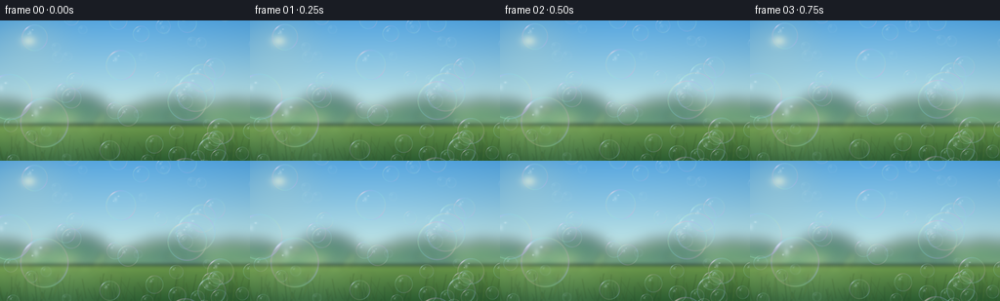
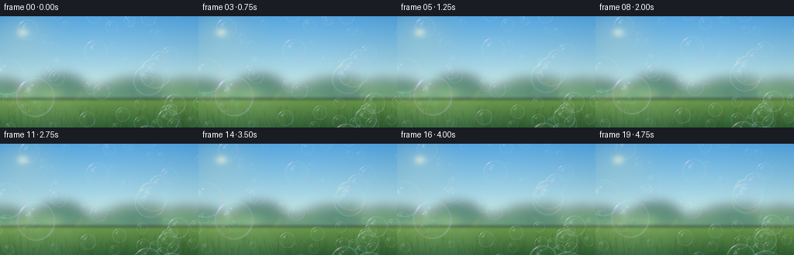

CODING AGENTS AS PIXEL WORLD MODELS
traex/GPT-5.6-Sol · phygen_076
点击播放 · 原生 RGB 像素
逐轮保存的候选
回放视频、检查图与代码变化。
每份候选均可单独播放。实际图片检查记录在下方工具轨迹中。
候选 01播放与检查图
点击播放 · 原生 RGB 像素


展开代码变化
--- 上一保存版本
+++ 本次保存版本
@@ -0,0 +1,209 @@
+from pathlib import Path
+import math
+import colorsys
+import numpy as np
+import cv2
+from PIL import Image, ImageDraw, ImageFilter
+import artifact_io
+
+CASE_DIR = Path(__file__).resolve().parent
+W, H, N = 256, 144, 20
+S = 3
+WW, HH = W*S, H*S
+FPS = 4.0
+rng = np.random.default_rng(76031)
+
+
+def make_background():
+ """A softly defocused sunny meadow beneath a clean blue sky."""
+ y = np.linspace(0, 1, HH, dtype=np.float32)[:, None]
+ x = np.linspace(0, 1, WW, dtype=np.float32)[None, :]
+ horizon = 0.72
+ top = np.array([77, 157, 215], np.float32)
+ low = np.array([205, 233, 221], np.float32)
+ q = np.minimum(y / horizon, 1.0)[..., None]
+ sky = top[None, None, :] * (1-q) + low[None, None, :] * q
+ sky = np.broadcast_to(sky, (HH, WW, 3)).copy()
+ # Atmospheric horizontal luminosity and a slight cyan vignette.
+ sky += (9.0 * np.exp(-((x-.49)/.46)**2))[..., None]
+ vign = ((x-.5)**2 * .7 + (y-.48)**2 * .18)[..., None]
+ sky -= 14*vign
+
+ # Sun outside/at upper-left: broad natural bloom, not a hard white disk.
+ sx, sy = .115, .145
+ d = np.sqrt(((x-sx)/.88)**2 + ((y-sy)/1.20)**2)
+ glow = np.exp(-(d/.175)**2)[..., None]
+ sky = sky*(1-.16*glow) + np.array([255,246,191],np.float32)*(.16*glow)
+ core = np.exp(-(d/.034)**2)[..., None]
+ sky = sky*(1-.46*core) + np.array([255,252,220],np.float32)*(.46*core)
+
+ base = Image.fromarray(np.uint8(np.clip(sky,0,255)), 'RGB').convert('RGBA')
+
+ # Defocused distant treeline, built from many overlapping translucent crowns.
+ trees = Image.new('RGBA', (WW, HH), (0,0,0,0))
+ td = ImageDraw.Draw(trees, 'RGBA')
+ # distant band
+ td.rectangle((0, int(HH*.715), WW, HH), fill=(51,112,65,235))
+ for i in range(105):
+ cx = int(rng.uniform(-35*S, WW+35*S))
+ cy = int(rng.uniform(HH*.67, HH*.87))
+ rr = int(rng.uniform(10, 36)*S)
+ # varied sunlit green crowns
+ if cx < WW*.25:
+ col = rng.choice([(48,119,68,165),(74,140,68,160),(109,157,69,140),(37,102,66,165)])
+ else:
+ col = rng.choice([(46,111,66,165),(72,129,62,155),(98,145,63,145),(35,93,66,165)])
+ td.ellipse((cx-rr,cy-rr*.60,cx+rr,cy+rr*.60), fill=tuple(int(v) for v in col))
+ trees = trees.filter(ImageFilter.GaussianBlur(7*S))
+ base = Image.alpha_composite(base, trees)
+
+ # Meadow with soft streaks and warm sunlight.
+ meadow = np.zeros((HH,WW,4),np.uint8)
+ yy0 = int(HH*.745)
+ gy = np.linspace(0,1,HH-yy0)[:,None]
+ green_top=np.array([107,151,70],float); green_bottom=np.array([39,88,45],float)
+ rgb=green_top[None,None,:]*(1-gy[...,None])+green_bottom[None,None,:]*gy[...,None]
+ rgb=np.broadcast_to(rgb,(HH-yy0,WW,3)).copy()
+ # broad sun stripe
+ rgb += 20*np.exp(-((np.arange(WW)[None,:]/WW-.20)/.26)**2)[...,None]
+ meadow[yy0:,:,:3]=np.uint8(np.clip(rgb,0,255)); meadow[yy0:,:,3]=240
+ meadow_im=Image.fromarray(meadow,'RGBA').filter(ImageFilter.GaussianBlur(2*S))
+ base=Image.alpha_composite(base,meadow_im)
+
+ # Background bokeh points among foliage.
+ bok=Image.new('RGBA',(WW,HH),(0,0,0,0)); bd=ImageDraw.Draw(bok,'RGBA')
+ for i in range(48):
+ cx=int(rng.uniform(0,WW)); cy=int(rng.uniform(HH*.60,HH*.94)); r=int(rng.uniform(1.2,5.0)*S)
+ color=(220,238,130,int(rng.uniform(20,65))) if cx<WW*.45 else (189,223,126,int(rng.uniform(15,48)))
+ bd.ellipse((cx-r,cy-r,cx+r,cy+r),fill=color)
+ bok=bok.filter(ImageFilter.GaussianBlur(3.2*S))
+ base=Image.alpha_composite(base,bok)
+
+ # A few indistinct foreground grass blades add photographic context.
+ grass=Image.new('RGBA',(WW,HH),(0,0,0,0)); gd=ImageDraw.Draw(grass,'RGBA')
+ for i in range(125):
+ x0=int(rng.uniform(0,WW)); y0=HH+int(rng.uniform(-4,8)*S)
+ ln=int(rng.uniform(7,30)*S); bend=int(rng.normal(0,4)*S)
+ col=rng.choice([(29,76,43,85),(51,98,44,75),(93,124,44,65),(124,143,54,50)])
+ gd.line((x0,y0,x0+bend,y0-ln), fill=tuple(int(v) for v in col), width=max(1,int(rng.uniform(.35,1.0)*S)))
+ grass=grass.filter(ImageFilter.GaussianBlur(.45*S))
+ return Image.alpha_composite(base,grass).convert('RGB')
+
+
+# Each bubble has stable identity and continuous motion. Radius strongly controls depth.
+bubbles=[]
+for i in range(62):
+ # Mostly small/medium bubbles plus recognisable close foreground ones.
+ u=rng.random()
+ if u < .10: r=rng.uniform(16,25)
+ elif u < .38: r=rng.uniform(9,15)
+ else: r=rng.uniform(4.2,9)
+ bubbles.append(dict(
+ x=rng.uniform(-15,W+15), y=rng.uniform(-28,H+26), r=r,
+ vy=rng.uniform(1.35,3.1), vx=rng.uniform(-.34,.48),
+ amp=rng.uniform(.8,3.3), freq=rng.uniform(.42,.88),
+ phase=rng.uniform(0,math.tau), hue=rng.uniform(0,math.tau),
+ squash=rng.uniform(.965,1.035), blur=(.48 if r<6 else (.18 if r<8 else 0.0))
+ ))
+# Hero bubbles positioned to make the subject instantly legible without obscuring scene.
+bubbles += [
+ dict(x=44,y=105,r=25.5,vy=1.75,vx=.24,amp=2.3,freq=.53,phase=.8,hue=.4,squash=1.018,blur=0),
+ dict(x=199,y=74,r=20.5,vy=2.0,vx=-.1,amp=2.0,freq=.64,phase=2.2,hue=2.1,squash=.985,blur=0),
+ dict(x=125,y=46,r=15.8,vy=2.2,vx=.20,amp=1.5,freq=.72,phase=4.2,hue=4.5,squash=1.02,blur=0),
+]
+
+
+def bubble_layer(radius, squash, phase, blur=0.0):
+ """Rasterize a transparent soap film: transparent center, colored thin-film edge, sun reflections."""
+ rx=max(2.5,radius*S); ry=rx*squash
+ pad=int(max(rx,ry)+4*S)
+ size=2*pad+1
+ yy,xx=np.mgrid[-pad:pad+1,-pad:pad+1].astype(np.float32)
+ xn=xx/rx; yn=yy/ry
+ rho=np.sqrt(xn*xn+yn*yn)
+ ang=np.arctan2(yn,xn)
+ inside=np.clip((1.035-rho)/.075,0,1)
+
+ # Whisper-light glass body and edge shading.
+ body=np.clip(1-rho,0,1)
+ alpha=inside*(2.0+4.5*(1-body))
+ # Main meniscus: narrow, irregular and angularly modulated.
+ ring=np.exp(-((rho-.955)/.026)**2) * inside
+ ring2=np.exp(-((rho-.895)/.050)**2) * inside
+ modulation=.64+.22*np.sin(2*ang+phase)+.12*np.sin(5*ang-phase*.4)
+ alpha += ring*(69*modulation+21) + ring2*9
+
+ # Iridescence along the rim, pastel cyan/magenta/gold with white mixed in.
+ wave=ang*2.25 + phase + rho*9.0
+ cr=188 + 55*np.sin(wave)
+ cg=203 + 42*np.sin(wave+2.08)
+ cb=218 + 35*np.sin(wave+4.18)
+ rgb=np.stack([cr,cg,cb],axis=-1)
+ # Almost invisible cool center, slightly brighter toward bottom (transmitted sky).
+ interior=np.zeros_like(rgb)+np.array([183,225,239],np.float32)
+ mix=np.clip(ring[...,None]*1.4 + ring2[...,None]*.34,0,1)
+ rgb=interior*(1-mix)+rgb*mix
+
+ # Sun glancing off the upper-left rim as broken crescent, not a complete cartoon outline.
+ da=np.arctan2(np.sin(ang+2.32),np.cos(ang+2.32))
+ cres=np.exp(-(da/.42)**2)*np.exp(-((rho-.925)/.046)**2)*inside
+ cres *= (.68+.32*np.cos(da*7+phase))
+ alpha += cres*145
+ rgb = rgb*(1-cres[...,None]*.72) + 255*(cres[...,None]*.72)
+
+ # Two soft reflected windows and a tiny point highlight.
+ g1=np.exp(-(((xn+.34)/.16)**2+((yn+.38)/.22)**2)*2.0)*inside
+ g2=np.exp(-(((xn+.15)/.10)**2+((yn+.59)/.075)**2)*2.3)*inside
+ dot=np.exp(-(((xn+.48)/.055)**2+((yn+.28)/.055)**2)*2.2)*inside
+ highlights=np.clip(g1*.68+g2*.9+dot,0,1)
+ alpha += highlights*112
+ rgb=rgb*(1-highlights[...,None]*.73)+255*highlights[...,None]*.73
+
+ # Delicate lower-right reflected magenta/cyan glints.
+ da2=np.arctan2(np.sin(ang-.72),np.cos(ang-.72))
+ lower=np.exp(-(da2/.50)**2)*np.exp(-((rho-.93)/.035)**2)*inside
+ alpha += lower*34
+ tint=np.zeros_like(rgb)+np.array([241,157,218],np.float32)
+ rgb=rgb*(1-lower[...,None]*.32)+tint*(lower[...,None]*.32)
+
+ # Outside is exactly transparent.
+ alpha*=inside
+ rgba=np.dstack([np.clip(rgb,0,255),np.clip(alpha,0,218)]).astype(np.uint8)
+ im=Image.fromarray(rgba,'RGBA')
+ if blur>0:
+ im=im.filter(ImageFilter.GaussianBlur(blur*S))
+ return im
+
+
+def render_frame(fi, background):
+ t=fi/FPS
+ canvas=background.convert('RGBA')
+ # Draw back-to-front; continuous upward buoyancy with gentle air-current meander.
+ live=[]
+ span=H+66
+ for b in bubbles:
+ cy=((b['y'] - b['vy']*t + 32) % span)-32
+ cx=b['x'] + b['vx']*t + b['amp']*math.sin(b['freq']*t+b['phase'])
+ # Tiny asymmetric film wobble, slow enough not to flicker.
+ squ=b['squash']*(1+.011*math.sin(.92*t+b['phase']))
+ rad=b['r']*(1+.005*math.sin(.73*t+b['phase']*.7))
+ live.append((rad,b,cx,cy,squ))
+ live.sort(key=lambda z:z[0])
+ for rad,b,cx,cy,squ in live:
+ # Skip safely beyond visible area.
+ if cx+rad < -2 or cx-rad > W+2 or cy+rad < -2 or cy-rad > H+2: continue
+ layer=bubble_layer(rad,squ,b['hue']+.18*t,b['blur'])
+ px=int(round(cx*S-layer.width/2)); py=int(round(cy*S-layer.height/2))
+ canvas.alpha_composite(layer,(px,py))
+ # High-quality downsample preserves subpixel movement and thin-film edges.
+ return np.array(canvas.convert('RGB').resize((W,H),Image.Resampling.LANCZOS),dtype=np.uint8)
+
+
+def main():
+ background=make_background()
+ frames=np.stack([render_frame(i,background) for i in range(N)],axis=0)
+ artifact_io.save(frames, CASE_DIR)
+ print('saved',frames.shape,frames.dtype,'range',frames.min(),frames.max())
+
+if __name__=='__main__':
+ main()
可观测工具轨迹
实际执行的命令与返回图片。
命令 1exit 0
/bin/bash -lc "cat prompt.txt && printf '\\n---RULES---\\n' && cat GENERATION_RULES.md && printf '\\n---SPEC---\\n' && cat task_spec.json"
命令 2exit 0
/bin/bash -lc "find . -maxdepth 2 -type f -printf '%p\\n' | sort"
命令 3exit 0
/bin/bash -lc "which ffmpeg; ffmpeg -version | head -3; which blender || true; python3 - <<'PY'
try:
import cv2; print('cv2',cv2.__version__)
except Exception as e: print('no cv2',e)
try:
from PIL import Image; print('PIL ok')
except Exception as e: print('no PIL',e)
PY"命令 4exit 0
/bin/bash -lc 'cat artifact_io.py'
命令 5exit 0
/bin/bash -lc "cat > generate.py <<'PY'
from pathlib import Path
import math
import colorsys
import numpy as np
import cv2
from PIL import Image, ImageDraw, ImageFilter
import artifact_io
CASE_DIR = Path(__file__).resolve().parent
W, H, N = 256, 144, 20
S = 3
WW, HH = W*S, H*S
FPS = 4.0
rng = np.random.default_rng(76031)
def make_background():
\"\"\"A softly defocused sunny meadow beneath a clean blue sky.\"\"\"
y = np.linspace(0, 1, HH, dtype=np.float32)[:, None]
x = np.linspace(0, 1, WW, dtype=np.float32)[None, :]
horizon = 0.72
top = np.array([77, 157, 215], np.float32)
low = np.array([205, 233, 221], np.float32)
q = np.minimum(y / horizon, 1.0)[..., None]
sky = top[None, None, :] * (1-q) + low[None, None, :] * q
sky = np.broadcast_to(sky, (HH, WW, 3)).copy()
# Atmospheric horizontal luminosity and a slight cyan vignette.
sky += (9.0 * np.exp(-((x-.49)/.46)**2))[..., None]
vign = ((x-.5)**2 * .7 + (y-.48)**2 * .18)[..., None]
sky -= 14*vign
# Sun outside/at upper-left: broad natural bloom, not a hard white disk.
sx, sy = .115, .145
d = np.sqrt(((x-sx)/.88)**2 + ((y-sy)/1.20)**2)
glow = np.exp(-(d/.175)**2)[..., None]
sky = sky*(1-.16*glow) + np.array([255,246,191],np.float32)*(.16*glow)
core = np.exp(-(d/.034)**2)[..., None]
sky = sky*(1-.46*core) + np.array([255,252,220],np.float32)*(.46*core)
base = Image.fromarray(np.uint8(np.clip(sky,0,255)), 'RGB').convert('RGBA')
# Defocused distant treeline, built from many overlapping translucent crowns.
trees = Image.new('RGBA', (WW, HH), (0,0,0,0))
td = ImageDraw.Draw(trees, 'RGBA')
# distant band
td.rectangle((0, int(HH*.715), WW, HH), fill=(51,112,65,235))
for i in range(105):
cx = int(rng.uniform(-35*S, WW+35*S))
cy = int(rng.uniform(HH*.67, HH*.87))
rr = int(rng.uniform(10, 36)*S)
# varied sunlit green crowns
if cx < WW*.25:
col = rng.choice([(48,119,68,165),(74,140,68,160),(109,157,69,140),(37,102,66,165)])
else:
col = rng.choice([(46,111,66,165),(72,129,62,155),(98,145,63,145),(35,93,66,165)])
td.ellipse((cx-rr,cy-rr*.60,cx+rr,cy+rr*.60), fill=tuple(int(v) for v in col))
trees = trees.filter(ImageFilter.GaussianBlur(7*S))
base = Image.alpha_composite(base, trees)
# Meadow with soft streaks and warm sunlight.
meadow = np.zeros((HH,WW,4),np.uint8)
yy0 = int(HH*.745)
gy = np.linspace(0,1,HH-yy0)[:,None]
green_top=np.array([107,151,70],float); green_bottom=np.array([39,88,45],float)
rgb=green_top[None,None,:]*(1-gy[...,None])+green_bottom[None,None,:]*gy[...,None]
rgb=np.broadcast_to(rgb,(HH-yy0,WW,3)).copy()
# broad sun stripe
rgb += 20*np.exp(-((np.arange(WW)[None,:]/WW-.20)/.26)**2)[...,None]
meadow[yy0:,:,:3]=np.uint8(np.clip(rgb,0,255)); meadow[yy0:,:,3]=240
meadow_im=Image.fromarray(meadow,'RGBA').filter(ImageFilter.GaussianBlur(2*S))
base=Image.alpha_composite(base,meadow_im)
# Background bokeh points among foliage.
bok=Image.new('RGBA',(WW,HH),(0,0,0,0)); bd=ImageDraw.Draw(bok,'RGBA')
for i in range(48):
cx=int(rng.uniform(0,WW)); cy=int(rng.uniform(HH*.60,HH*.94)); r=int(rng.uniform(1.2,5.0)*S)
color=(220,238,130,int(rng.uniform(20,65))) if cx<WW*.45 else (189,223,126,int(rng.uniform(15,48)))
bd.ellipse((cx-r,cy-r,cx+r,cy+r),fill=color)
bok=bok.filter(ImageFilter.GaussianBlur(3.2*S))
base=Image.alpha_composite(base,bok)
# A few indistinct foreground grass blades add photographic context.
grass=Image.new('RGBA',(WW,HH),(0,0,0,0)); gd=ImageDraw.Draw(grass,'RGBA')
for i in range(125):
x0=int(rng.uniform(0,WW)); y0=HH+int(rng.uniform(-4,8)*S)
ln=int(rng.uniform(7,30)*S); bend=int(rng.normal(0,4)*S)
col=rng.choice([(29,76,43,85),(51,98,44,75),(93,124,44,65),(124,143,54,50)])
gd.line((x0,y0,x0+bend,y0-ln), fill=tuple(int(v) for v in col), width=max(1,int(rng.uniform(.35,1.0)*S)))
grass=grass.filter(ImageFilter.GaussianBlur(.45*S))
return Image.alpha_composite(base,grass).convert('RGB')
# Each bubble has stable identity and continuous motion. Radius strongly controls depth.
bubbles=[]
for i in range(62):
# Mostly small/medium bubbles plus recognisable close foreground ones.
u=rng.random()
if u < .10: r=rng.uniform(16,25)
elif u < .38: r=rng.uniform(9,15)
else: r=rng.uniform(4.2,9)
bubbles.append(dict(
x=rng.uniform(-15,W+15), y=rng.uniform(-28,H+26), r=r,
vy=rng.uniform(1.35,3.1), vx=rng.uniform(-.34,.48),
amp=rng.uniform(.8,3.3), freq=rng.uniform(.42,.88),
phase=rng.uniform(0,math.tau), hue=rng.uniform(0,math.tau),
squash=rng.uniform(.965,1.035), blur=(.48 if r<6 else (.18 if r<8 else 0.0))
))
# Hero bubbles positioned to make the subject instantly legible without obscuring scene.
bubbles += [
dict(x=44,y=105,r=25.5,vy=1.75,vx=.24,amp=2.3,freq=.53,phase=.8,hue=.4,squash=1.018,blur=0),
dict(x=199,y=74,r=20.5,vy=2.0,vx=-.1,amp=2.0,freq=.64,phase=2.2,hue=2.1,squash=.985,blur=0),
dict(x=125,y=46,r=15.8,vy=2.2,vx=.20,amp=1.5,freq=.72,phase=4.2,hue=4.5,squash=1.02,blur=0),
]
def bubble_layer(radius, squash, phase, blur=0.0):
\"\"\"Rasterize a transparent soap film: transparent center, colored thin-film edge, sun reflections.\"\"\"
rx=max(2.5,radius*S); ry=rx*squash
pad=int(max(rx,ry)+4*S)
size=2*pad+1
yy,xx=np.mgrid[-pad:pad+1,-pad:pad+1].astype(np.float32)
xn=xx/rx; yn=yy/ry
rho=np.sqrt(xn*xn+yn*yn)
ang=np.arctan2(yn,xn)
inside=np.clip((1.035-rho)/.075,0,1)
# Whisper-light glass body and edge shading.
body=np.clip(1-rho,0,1)
alpha=inside*(2.0+4.5*(1-body))
# Main meniscus: narrow, irregular and angularly modulated.
ring=np.exp(-((rho-.955)/.026)**2) * inside
ring2=np.exp(-((rho-.895)/.050)**2) * inside
modulation=.64+.22*np.sin(2*ang+phase)+.12*np.sin(5*ang-phase*.4)
alpha += ring*(69*modulation+21) + ring2*9
# Iridescence along the rim, pastel cyan/magenta/gold with white mixed in.
wave=ang*2.25 + phase + rho*9.0
cr=188 + 55*np.sin(wave)
cg=203 + 42*np.sin(wave+2.08)
cb=218 + 35*np.sin(wave+4.18)
rgb=np.stack([cr,cg,cb],axis=-1)
# Almost invisible cool center, slightly brighter toward bottom (transmitted sky).
interior=np.zeros_like(rgb)+np.array([183,225,239],np.float32)
mix=np.clip(ring[...,None]*1.4 + ring2[...,None]*.34,0,1)
rgb=interior*(1-mix)+rgb*mix
# Sun glancing off the upper-left rim as broken crescent, not a complete cartoon outline.
da=np.arctan2(np.sin(ang+2.32),np.cos(ang+2.32))
cres=np.exp(-(da/.42)**2)*np.exp(-((rho-.925)/.046)**2)*inside
cres *= (.68+.32*np.cos(da*7+phase))
alpha += cres*145
rgb = rgb*(1-cres[...,None]*.72) + 255*(cres[...,None]*.72)
# Two soft reflected windows and a tiny point highlight.
g1=np.exp(-(((xn+.34)/.16)**2+((yn+.38)/.22)**2)*2.0)*inside
g2=np.exp(-(((xn+.15)/.10)**2+((yn+.59)/.075)**2)*2.3)*inside
dot=np.exp(-(((xn+.48)/.055)**2+((yn+.28)/.055)**2)*2.2)*inside
highlights=np.clip(g1*.68+g2*.9+dot,0,1)
alpha += highlights*112
rgb=rgb*(1-highlights[...,None]*.73)+255*highlights[...,None]*.73
# Delicate lower-right reflected magenta/cyan glints.
da2=np.arctan2(np.sin(ang-.72),np.cos(ang-.72))
lower=np.exp(-(da2/.50)**2)*np.exp(-((rho-.93)/.035)**2)*inside
alpha += lower*34
tint=np.zeros_like(rgb)+np.array([241,157,218],np.float32)
rgb=rgb*(1-lower[...,None]*.32)+tint*(lower[...,None]*.32)
# Outside is exactly transparent.
alpha*=inside
rgba=np.dstack([np.clip(rgb,0,255),np.clip(alpha,0,218)]).astype(np.uint8)
im=Image.fromarray(rgba,'RGBA')
if blur>0:
im=im.filter(ImageFilter.GaussianBlur(blur*S))
return im
def render_frame(fi, background):
t=fi/FPS
canvas=background.convert('RGBA')
# Draw back-to-front; continuous upward buoyancy with gentle air-current meander.
live=[]
span=H+66
for b in bubbles:
cy=((b['y'] - b['vy']*t + 32) % span)-32
cx=b['x'] + b['vx']*t + b['amp']*math.sin(b['freq']*t+b['phase'])
# Tiny asymmetric film wobble, slow enough not to flicker.
squ=b['squash']*(1+.011*math.sin(.92*t+b['phase']))
rad=b['r']*(1+.005*math.sin(.73*t+b['phase']*.7))
live.append((rad,b,cx,cy,squ))
live.sort(key=lambda z:z[0])
for rad,b,cx,cy,squ in live:
# Skip safely beyond visible area.
if cx+rad < -2 or cx-rad > W+2 or cy+rad < -2 or cy-rad > H+2: continue
layer=bubble_layer(rad,squ,b['hue']+.18*t,b['blur'])
px=int(round(cx*S-layer.width/2)); py=int(round(cy*S-layer.height/2))
canvas.alpha_composite(layer,(px,py))
# High-quality downsample preserves subpixel movement and thin-film edges.
return np.array(canvas.convert('RGB').resize((W,H),Image.Resampling.LANCZOS),dtype=np.uint8)
def main():
background=make_background()
frames=np.stack([render_frame(i,background) for i in range(N)],axis=0)
artifact_io.save(frames, CASE_DIR)
print('saved',frames.shape,frames.dtype,'range',frames.min(),frames.max())
if __name__=='__main__':
main()
PY
python3 generate.py"命令 6exit 0
/bin/bash -lc "python3 - <<'PY'
from pathlib import Path
import numpy as np
from PIL import Image
p=Path('.')
z=np.load('pixels.npz')['pixels']
print('packed tensor', z.shape, z.dtype)
ims=np.stack([np.array(Image.open(f'frames/{i:02d}.png').convert('RGB')) for i in range(20)])
print('frames',ims.shape,ims.dtype)
print('mean abs adjacent deltas:', [round(float(np.abs(ims[i].astype(int)-ims[i-1].astype(int)).mean()),3) for i in range(1,20)])
print('unique frame hashes',len({hash(x.tobytes()) for x in ims}))
print('files',[(x,Path(x).stat().st_size) for x in ['pixels.npz','index.html','inspection.png','transition_check.png','generate.py']])
assert ims.shape==(20,144,256,3) and ims.dtype==np.uint8
assert len({x.tobytes() for x in ims})==20
PY
python3 -m py_compile generate.py"视觉工具实际返回图片 1

视觉工具实际返回图片 2
视觉工具实际返回图片 3
保存候选 1 份；完成命令 6 次；可验证图片返回 3 张。原始 API 响应与完整日志保留在本地。